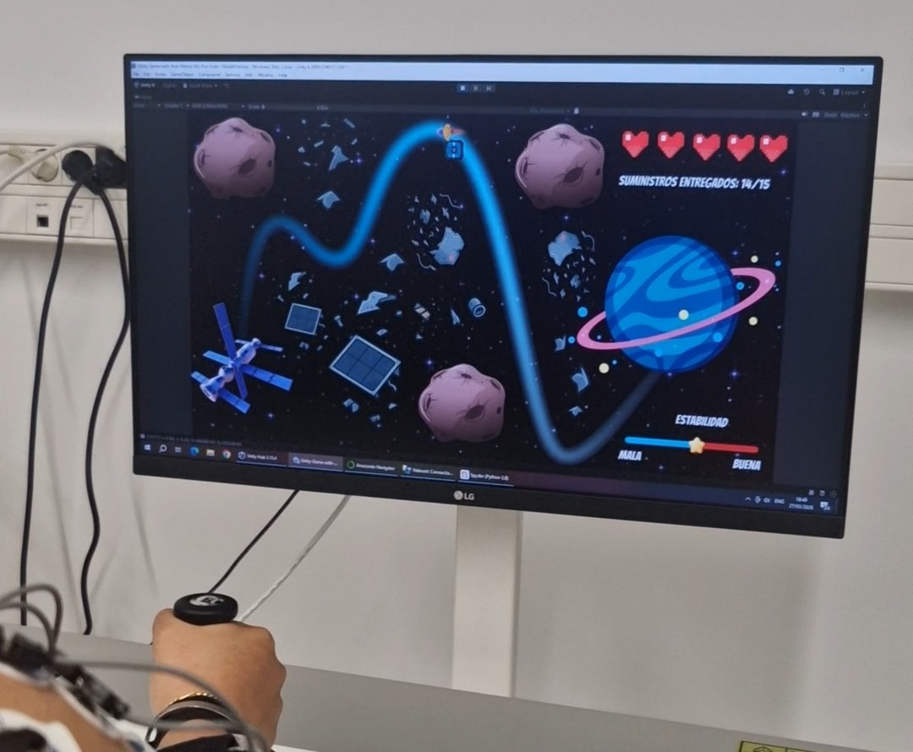
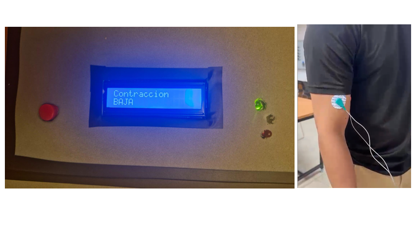

Engineering | Product Design | Prototyping | Testing
Alejandro Mayoral
Welcome to my engineering portfolio. Here you will find selected projects involving product design, CAD modeling, prototyping, testing, data analysis, and biomedical systems. These projects demonstrate my experience turning technical requirements and ideas into functional solutions through design, experimentation, and validation.
Projects
Each card summarizes the goal of the project. Click to see the problem, the solution and the work done.

Robotic Rehabilitation System with EMG Analysis
Integrated Unity, ArmMotus M2 Pro, and EMG acquisition to collect synchronized movement and muscle data, validating the system with 10 users through performance and signal analysis.

Fixtures
Collection of test and production fixtures designed to improve repeatability, validation, and manufacturing execution.

EMG-Based Muscle Activation Detector for Prosthetic Control
Designed and built an EMG-based circuit capable of detecting muscle activity, processing the signal with Arduino, and classifying contraction intensity as low, medium, or high based on maximum voluntary contraction.
Flappy Bird for Shoulder Rehabilitation
Unity-based game adapted for shoulder rehabilitation exercises. Controlled with accelerometer or camera.